9 Normal Approximation and Sample Size Calculation
Review
The Bootstrap
$$ \newcommand{X}{} \newcommand{Y}{}
$$
The Sample \[ \begin{array}{r|rrrr|r} i & 1 & 2 & \dots & 625 & \bar{Y}_{625} \\ Y_i & 1 & 1 & \dots & 1 & 0.68 \\ \end{array} \]
The Bootstrap Sample
\[ \begin{array}{r|rrrr|r} i & 1 & 2 & \dots & 625 & \bar{Y}_{625}^* \\ Y_i^* & 1 & 0 & \dots & 1 & 0.68 \\ \end{array} \]
The Population
\[ \begin{array}{r|rrrr|r} j & 1 & 2 & \dots & 7.23M & \bar{y}_{7.23M} \\ y_{j} & 1 & 1 & \dots & 1 & 0.70 \\ \end{array} \]
The ‘Bootstrap Population’ — The Sample \[ \begin{array}{r|rrrr|r} j & 1 & 2 & \dots & 625 & \bar{y}^*_{625} \\ y_j^* & 1 & 1 & \dots & 1 & 0.68 \\ \end{array} \]
- Last class, we looked at a general method for estimating sampling distributions: bootstrapping.
- Draw a sample of size \(n\) from your sample. That’s a bootstrap sample.
- Calculate your estimator using that sample. That’s a bootstrap estimate.
- Repeat to get draws from the distribution of bootstrap estimates. That’s the bootstrap sampling distribution.
- It’s a nonparametric estimate. We’re approximating the sampling distribution without using its parametric form.
- This is useful because we usually don’t know its parametric form.
- Estimating the proportion of 1s in a population of binary outcomes is a special case in which we do.
- But complicating things even a little, e.g. estimating a difference in proportions, changes that.
Bootstrapping Proportions
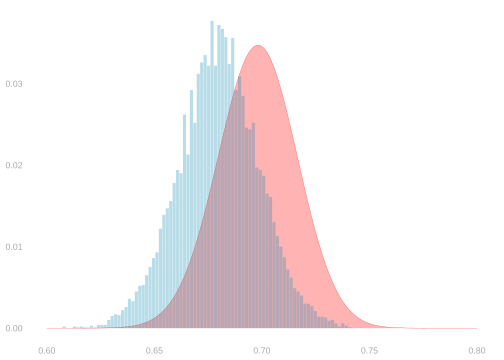
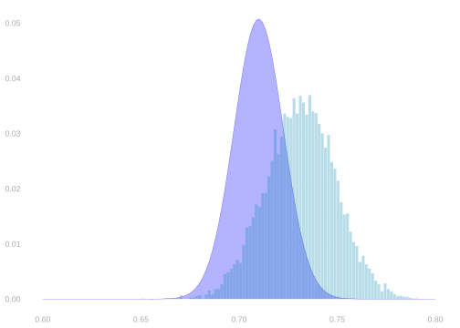
- When we’re estimating a proportion, the bootstrap sampling distribution is exactly the same as
the parametric estimate we get by plugging the sample proportion into the Binomial distribution’s formula.- That’s good when we’ve sampled with replacement, so our sampling distribution is actually Binomial.
- It’s less good when we’ve sampled without replacement, so our sampling distribution is Hypergeometric.
- Using this equivalence, we’ve talked a lot about how the bootstrap works in this special case.
Bootstrapping Differences in Proportions
- We have tried it out in the context of estimating a difference in proportions.
- In particular, the difference in turnout between Black and non-Black voters in GA in the 2020 election.
- This difference does not have a sampling distribution with a simple parametric form, e.g. the binomial distribution.
- But we can calculate the bootstrap sampling distribution. That’s how we calibrated. It worked in this case.
- The bootstrap samping distribution had almost the same width as the actual sampling distribtion.
- And you can check, computationally, that bootstrap-calibrated intervals have almost exactly 95% coverage.
- When we sample with replacement, it usually works.
- In fact, it’ll work for every estimator we talk about in this class.
- We won’t have time to prove that in general—it does take some fairly sophisticated tools—but it is true.
- But to give you a sense of why it usually works, I’ll take you through this case in next week’s homework.
\[ \small{ \begin{array}{r|rr|rr|r|rr|rrrr} \text{call} & 1 & & 2 & & \dots & 625 & & & & & & \\ \text{pollster} & X_1 & Y_1 & X_2 & Y_2 & \dots & X_{625} & Y_{625} & \overline{X} & \overline{Y} &\frac{\sum_{i:X_i=1} Y_i}{\sum_{i:X_i=1} 1} & \frac{\sum_{i:X_i=0} Y_i}{\sum_{i:X_i=0} 1} & \text{difference} \\ \hline \color[RGB]{7,59,76}1 & \color[RGB]{7,59,76}0 & \color[RGB]{7,59,76}1 & \color[RGB]{7,59,76}1 & \color[RGB]{7,59,76}1 & \color[RGB]{7,59,76}\dots & \color[RGB]{7,59,76}0 & \color[RGB]{7,59,76}1 & \color[RGB]{7,59,76}0.28 & \color[RGB]{7,59,76}0.68 & \color[RGB]{7,59,76}0.69 & 0.68 & \color[RGB]{7,59,76}0.01 \\ \end{array} } \]
\[ \small{ \begin{array}{r|rr|rr|r|rr|rrrr} \text{`call'} & 1 & & 2 & & \dots & 625 & & & & & & \\ \text{`pollster'} & X_1^* & Y_1^* & X_2^* & Y_2^* & \dots & X^*_{625} & Y^*_{625} & \overline{X}^* & \overline{Y}^* &\frac{\sum_{i:X_i^*=1} Y_i}{\sum_{i:X_i^*=1} 1} & \frac{\sum_{i:X_i^*=0} Y_i}{\sum_{i:X_i^*=0} 1} & \text{difference} \\ \hline \color[RGB]{239,71,111}2 & \color[RGB]{239,71,111}X_{398} & \color[RGB]{239,71,111}Y_{398} & \color[RGB]{239,71,111}X_{129} & \color[RGB]{239,71,111}Y_{129} & \color[RGB]{239,71,111}\dots & \color[RGB]{239,71,111}X_{232} & \color[RGB]{239,71,111}Y_{232} & & & & & & \\ & \color[RGB]{239,71,111}1 & \color[RGB]{239,71,111}0 & \color[RGB]{239,71,111}1 & \color[RGB]{239,71,111}1 & \color[RGB]{239,71,111}\dots & \color[RGB]{239,71,111}0 & \color[RGB]{239,71,111}1 & \color[RGB]{239,71,111}0.29 & \color[RGB]{239,71,111}0.68 & \color[RGB]{239,71,111}0.68 & \color[RGB]{239,71,111}0.69 & \color[RGB]{239,71,111}-0.01 \\ \color[RGB]{17,138,178}3 & \color[RGB]{17,138,178}X_{293} & \color[RGB]{17,138,178}Y_{293} & \color[RGB]{17,138,178}X_{526} & \color[RGB]{17,138,178}Y_{526} & \color[RGB]{17,138,178}\dots & \color[RGB]{17,138,178}X_{578} & \color[RGB]{17,138,178}Y_{578} & & & & & & \\ & \color[RGB]{17,138,178}0 & \color[RGB]{17,138,178}1 & \color[RGB]{17,138,178}0 & \color[RGB]{17,138,178}1 & \color[RGB]{17,138,178}\dots & \color[RGB]{17,138,178}0 & \color[RGB]{17,138,178}1 & \color[RGB]{17,138,178}0.28 & \color[RGB]{17,138,178}0.65 & \color[RGB]{17,138,178}0.67 & \color[RGB]{17,138,178}0.64 & \color[RGB]{17,138,178}0.03 \\ \color[RGB]{6,214,160}1 & \color[RGB]{6,214,160}X_{281} & \color[RGB]{6,214,160}Y_{281} & \color[RGB]{6,214,160}X_{520} & \color[RGB]{6,214,160}Y_{520} & \color[RGB]{6,214,160}\dots & \color[RGB]{6,214,160}X_{363} & \color[RGB]{6,214,160}Y_{363} & & & & & & \\ & \color[RGB]{6,214,160}0 & \color[RGB]{6,214,160}0 & \color[RGB]{6,214,160}0 & \color[RGB]{6,214,160}1 & \color[RGB]{6,214,160}\dots & \color[RGB]{6,214,160}0 & \color[RGB]{6,214,160}1 & \color[RGB]{6,214,160}0.28 & \color[RGB]{6,214,160}0.68 & \color[RGB]{6,214,160}0.71 & \color[RGB]{6,214,160}0.66 & \color[RGB]{6,214,160}0.05 \\ \end{array} } \]
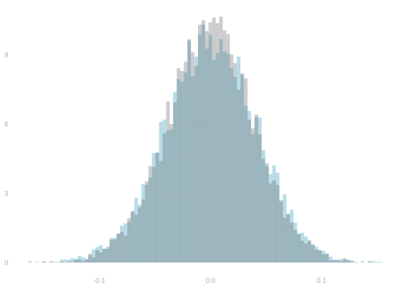
An Important Limitation of the Bootstrap
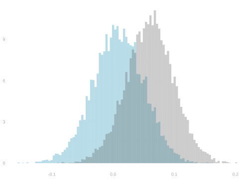
- The bootstrap is a great method for understand what we have learned after we have data.
- It’s easy to use and we usually get good calibration.
- But it’s also important to be able to reason about what we can learn before we have data.
- For this, the bootstrap is not very helpful.
- Today, we’ll talk about that. To do it, we’ll introduce a new tool: normal approximation.
- And we’ll use it for an important ‘before data reasoning’ task: sample size calculation.
- This is using what you know—or are willing to assume—to choose the size of your study.
- In particular, to choose it so your confidence intervals are as narrow as you want them to be.
Normal Approximation
The Normal Distribution
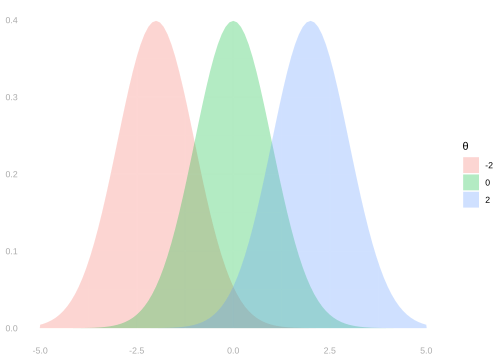
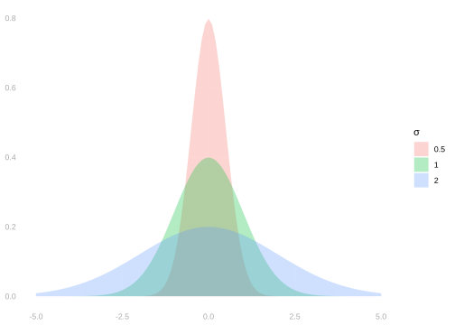
The normal distribution is a parametric family of distributions involving two parameters.
- Its mean, \(\theta\).
- Its standard deviation, \(\sigma\).
We say a random variable \(X\) is normally distributed with mean \(\theta\) and standard deviation \(\sigma\) …
… if the probability that it’s in an interval \([a,b]\) is given by this integral of its probability density. \[ P_{\theta,\sigma}(X \in [a,b]) = \int_a^b f_{\theta,\sigma}(x)dx \qfor f_{\theta, \sigma}(x) = \frac{1}{\sqrt{2\pi}\sigma}e^{-\frac{(x-\theta)^2}{2\sigma^2}} \]
We have to talk about the probability that it’s ‘in an interval’ rather than that it ‘takes a value’ because …
… the probability it actually takes on any particular value is \(x\) zero: it’s an integral from \(x\) to \(x\).
This seems like an annoyance, but given what the normal distribution is actually used for, it’s a blessing.1
Normal Approximation
- A distribution’s normal approximation is a normal distribution with the same mean \(\theta\) and standard deviation \(\sigma\).
- These show up everywhere because they’re easy to work with and the approximation tends to be good.
- Approximation is good, in particular, for the distribution of a mean of independent random variables.
- Or independent enough ones.
- Above, we see three Binomial distributions with their normal approximations:
- the distributions of the mean of 10, 30, and 90 coin flips.
- These approximations get increasingly accurate as the number of flips \(n\) increases.
- That’s universal. It always happens with means. It’s called the Central Limit Theorem.
The Width of Normal Distributions
- One thing that’s convenient about the normal distribution is that it’s easy to reason about.
- In particular, it’s easy to reason about the width of its middle x%.
- To include 68.3% of draws, you go out 1 standard deviation from its mean.
- To include 95.4% of draws, you go out 2 standard deviations.
- To include 99.7% of draws, you go out 3 standard deviations.
- To get almost exactly 95% of draws, we go out 1.96 standard deviations: \(\theta \pm 1.96\sigma\).
- Two is close enough in practice, but we tend to write 1.96 anyway.
- It’s a signal about what we’re doing. You can get a 2 anywhere in a calculation.
- When you see a 1.96, you know you’re talking about the middle 95% of the normal.
Calibration Using Normal Approximation
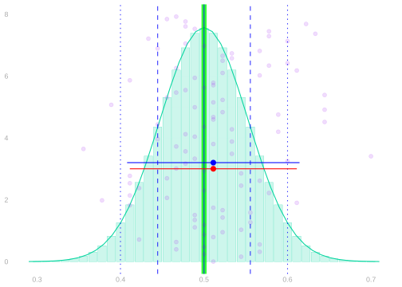

- Calibrating interval estimates using normal approximation is easy.
- You estimate the standard deviation of your point estimator.
- You go out ± 1.96 (estimated) standard deviations from your point estimate.
\[ \text{interval estimate} = \hat\theta \pm 1.96 \hat\sigma \]
- We’re choosing our interval’s width essentially the same way we always have.
- We’re still using the middle 95% of an estimate of the sample distribution.
- It just looks different because we have a convenient formula for that width.
- Above left, you can see two interval estimates superimposed on the sampling distribution of a sample proportion.
- The red one is calibrated using the binomial as before.
- The blue one is calibrated using normal approximation.
- Above right, you can see the binomial and normal sampling distribution estimates these are based on.
When This Works

- This all works if three things are true.
- The sampling distribution needs to be in the right place, i.e. centered on the estimation target.
- The sampling distribution needs to be approximately normal.
- The estimated sampling distribution has approximately the right width.
- The first is called unbiasedness of our point estimator.
- Most of the estimators we’ll talk about in this class are unbiased or almost unbiased.
- We’ll check this for the sample proportion in a minute.
- The second is something that the CLT tells us tends to happen, especially for large \(n\).
- Talking about the accuracy of normal approximation is interesting, but beyond the scope of this class.
- I’d need at least a couple weeks to teach you about what’s going on there.
- But you can take it as a given for most of the estimators we’ll study.
- The third amounts to getting a good estimate of our point estimator’s standard deviation.
- We’ll work on this, again for the sample proportion, later today.
- And we’ll talk about this for other estimators throughout the semester.
- It is, however, a bit of a pain. That’s one reason you might prefer the bootstrap.
Normal Approximation in Context
A Proportion when Sampling with Replacement
- When we sample from a binary population with replacement, our sample proportion’s distribution is Binomial.
- And we can estimate that distribution by plugging our sample proportion into the Binomial formula.
- But its normal approximation tends to be very good, so we can get away with estimating that instead.
\[ \begin{aligned} \text{normal approximation} & \ f_{\theta,\sigma}(x) \qfor \sigma^2 = \frac{\theta(1-\theta)}{n} \\ \text{corresponding estimate} & \ f_{\hat\theta, \hat \sigma}(x) \qfor \hat\sigma^2 = \frac{\hat \theta(1-\hat \theta)}{n}. \end{aligned} \]
- Pictured: three Binomial distributions with their normal approximations.
- These are the distributions of the sample proportion when we draw a samples of size 10, 30, and 90 …
- … with replacement from a binary population in which the proportion of ones is \(\theta=.5\).
A Proportion when Sampling without Replacement
- When we sample from a binary population without replacement, our sample proportion’s distribution is Hypergeometric.
- And we can estimate that distribution by plugging our sample proportion into the Hypergeometric formula.
- But again, its normal approximation tends to be very good, so we can get away with estimating that instead.
- When we do this, we can see where we go wrong when use use the Binomial—or equivalently the bootstrap.
- When our sample size \(\color[RGB]{64,64,64}n\) is a meaningful fraction of our population size \(\color[RGB]{64,64,64}m\), the Binomial is too wide.
- The Hypergeometric’s standard deviation differs from the Binomial’s by a factor of \(\color[RGB]{64,64,64}\sqrt{\frac{m-n}{m-1}}\).
- When we’re sampling half our population, i.e. \(n=m/2\), that’s roughly \(\color[RGB]{64,64,64}\sqrt{1/2} \approx .7\).
\[ \begin{aligned} \text{normal approximation} & \ f_{\theta,\sigma}(x) \qfor \sigma^2 = \frac{\theta(1-\theta)}{n} \times \frac{m-n}{m-1} \\ \text{corresponding estimate} & \ f_{\hat\theta, \hat \sigma}(x) \qfor \hat\sigma^2 = \frac{\hat \theta(1-\hat \theta)}{n} \times \frac{m-n}{m-1}. \end{aligned} \]
- Pictured: three Hypergeometric distributions with their normal approximations.
- These are the distribution of the sample proportion when we draw a samples of size 10, 30, and 90 …
- … without replacement from a binary population twice the size in which the proportion of ones is \(\color[RGB]{64,64,64}\theta=.5\).
A Difference in Proportions
- When we estimated the difference in turnout between Black and non-Black voters:
- We drew a sample \((X_1,Y_1) \ldots (X_n,Y_n)\) with replacement …
- … from a population \((x_1, y_1) \ldots (x_m, y_m)\) with binary outcomes \(y_j\) and covariates \(x_j\).
- We calculated the difference in proportion between the subsamples with \(X_i=1\) and \(X_i=0\).
- We used the bootstrap to estimate the sampling distribution of this difference.
\[ \begin{aligned} \text{estimator} & = \frac{\sum_{i:X_i=1} Y_i}{\sum_{i:X_i=1} 1} - \frac{\sum_{i:X_i=0} Y_i}{\sum_{i:X_i=0} 1} \\ \text{bootstrap estimate} & = \frac{\sum_{i:X_i^*=1} Y_i^*}{\sum_{i:X_i^*=1} 1} - \frac{\sum_{i:X_i^*=0} Y_i^*}{\sum_{i:X_i^*=0} 1} \end{aligned} \]
- This sampling distribution does not have a simple parametric form, e.g. Binomial or Hypergeometric.
- But the bootstrap sampling distribution is an accurate estimate.
- As is, if we prefer, an estimate based on normal approximation.
\[ \begin{aligned} \text{normal approximation:} & \ f_{\theta,\sigma}(x) \qfor \theta=\mu(1)-\mu(0) \qand \sigma^2 = \mathop{\mathrm{E}}\qty[\frac{\mu(1)\{1-\mu(1)\}}{N_1} + \frac{\mu(0)\{1-\mu(0)\}}{N_0}] \\ \text{corresponding estimate:} & \ f_{\hat\theta, \hat \sigma}(x) \qfor \hat\theta=\hat\mu(1)-\hat\mu(0) \qand \hat\sigma^2 = \frac{\hat \mu(1)\{1-\hat \mu(1)\}}{N_1} + \frac{\hat \mu(0)\{1-\hat \mu(0)\}}{N_0} \end{aligned} \]
Above, \(N_0\) and \(N_1\) are the sizes of the subsamples with \(X_i=0\) and \(X_i=1\) and \(\mu(0)\) and \(\mu(1)\) are the proportion of ones in the corresponding subpopulations. More on this Friday and next week.
Using Normal Approximation
\[\begin{aligned} &f_{\hat\theta, \hat \sigma}(x) \qfor \hat\sigma^2 = \frac{\hat \theta(1-\hat \theta)}{n} && \text{a proportion when sampling with replacement} \\ &f_{\hat\theta, \hat \sigma}(x) \qfor \hat\sigma^2 = \frac{\hat \theta(1-\hat \theta)}{n} \times \frac{m-n}{m-1} && \text{a proportion when sampling without replacement} \\ &f_{\hat\theta, \hat \sigma}(x) \qfor \hat\sigma^2 = \frac{\hat \mu(1)\{1-\hat \mu(1)\}}{N_1} + \frac{\hat \mu(0)\{1-\hat \mu(0)\}}{N_0} && \text{a difference in proportions when sampling with replacement} \end{aligned}\]- What makes all this work is that we’re using good estimates of our estimator’s standard deviation.
- If we have a formula for the estimator’s standard deviation, this is usuallly not so hard.
- We estimate whatever population summaries show up in the formula and plug them in.
- But we do need to do a bit of work to get that formula. We’ll do that in a few minutes.
- This involves calculating expectations, so we’ll start there.
Bias and Variance when Estimating a Proportion
Properties of Expectations: Linearity
\[ \begin{aligned} E ( a Y + b Z ) &= E (aY) + E (bZ) \\ &= aE(Y) + bE(Z) \\ & \text{ for random variables $Y, Z$ and numbers $a,b$ } \end{aligned} \]
- There are two things going on here.
- To take the expectation of a sum of two things, we can take two expectations and sum.
- To take the expectation of a constant times a random variable, we can multiply the random variable’s expectation by the constant.
- In other words, we can distribute expectations and can pull constants out of them.
- The sample mean is an unbiased estimator of the population mean whenever we sample uniformly at random.
- Definition. Sampling uniformly at random from a population \(y_1 \ldots y_m\) means that ….
- Informally, each ‘call’, considered on its own, is equally likely to go to anyone in the population.
- In mathematical notation, \(Y_i=y_{J_i}\) where \(J_i=1 \ldots m\) each with probability \(1/m\).
- This includes sampling with replacement and sampling without replacement.
\[ \begin{aligned} \mathop{\mathrm{E}}\qty[\frac1n \sum_{i=1}^n Y_i] &= \frac1n \sum_{i=1}^n \mathop{\mathrm{E}}[Y_i] && \text{linearity of expectation} \\ &= \frac1n \sum_{i=1}^n \qty{\sum_{j=1}^m y_j \times P(J_i=j) } && \text{def. expectation} \\ &= \frac1n \sum_{i=1}^n \qty{\sum_{j=1}^m y_j \times \frac{1}{m} } && \text{sampling uniformly at random} \\ &= \frac1n \sum_{i=1}^n \mu && \text{ for } \ \mu = \frac1m \sum_{j=1}^m y_j \\ &= \frac{1}{n} \times n \times \mu = \mu \end{aligned} \]
- In essence, it comes down to the fact that all we’re doing is summing.
- Expectations are probability-weighted sums.
- And we’re looking at the expectation of a sum.
- And we can change the order we sum in without changing what we get.
\[ \small{ \begin{aligned} \mathop{\mathrm{E}}\qty( a Y + b Z ) &= \sum_{y}\sum_z (a y + b z) \ P(Y=y, Z=z) && \text{ by definition of expectation} \\ &= \sum_{y}\sum_z a y \ P(Y=y, Z=z) + \sum_{z}\sum_y b z \ P(Y=y, Z=z) && \text{changing the order in which we sum} \\ &= \sum_{y} a y \ \sum_z P(Y=y,Z=z) + \sum_{z} b z \ \sum_y P(Y=y,Z=z) && \text{pulling constants out of the inner sums} \\ &= \sum_{y} a y \ P(Y=y) + \sum_{z} b z \ P(Z=z) && \text{summing to get marginal probabilities from our joint } \\ &= a\sum_{y} y \ P(Y=y) + b\sum_{z} z \ P(Z=z) && \text{ pulling constants out of the remaining sum } \\ &= a\mathop{\mathrm{E}}Y + b \mathop{\mathrm{E}}Z && \text{ by definition} \end{aligned} } \]
Properties of Expectations: Factorization of Products
\[ \mathop{\mathrm{E}}[YZ] = \mathop{\mathrm{E}}[Y]\mathop{\mathrm{E}}[Z] \qqtext{when $Y$ and $Z$ are independent} \]
- The expectation of a product of independent random variables is the product of their expectations.
- Definition. Random variables are independent if their joint distribution is the product of their marginal distributions.
- When we sample with replacement, the responses to our calls are independent.
- When we sample without replacement, they’re not independent.
- Lack of independence isn’t necessarily a bad thing.
- It’s why sampling without replacement gives us better precision.
- But it can make some calculations, e.g. for the standard deviation of a mean, a bit more complicated.
- It does not make calculating the expectation of a mean any harder. Why?
\[ \begin{aligned} \mathop{\mathrm{E}}[YZ] &= \sum_{yz} yz \ P(Y=y, Z=z) && \text{by definition of expectation} \\ &= \sum_y \sum_z yz \ P(Y=y) P(Z=z) && \text{factoring and ordering sums } \\ &= \textcolor[RGB]{17,138,178}{\sum_y y \ P(Y=y)} \textcolor[RGB]{239,71,111}{\sum_z z \ P(Z=z)} && \text{pulling factors that don't depend on $z$ out of the inner sum} \\ & \textcolor[RGB]{17,138,178}{\mathop{\mathrm{E}}[Y]} \textcolor[RGB]{239,71,111}{\mathop{\mathrm{E}}[Z]} && \text{by definition of expectation} \end{aligned} \]
The Standard Deviation of a Proportion
Sampling with Replacement
We’ve worked out the variance (i.e. the squared standard deviation) of a binary random random variable. \[ \mathop{\mathrm{\mathop{\mathrm{V}}}}[Y] = \theta(1-\theta) \qqtext{ when } Y = \begin{cases} 1 & \qqtext{ with probability } \theta \\ 0 & \qqtext{ with probability } 1-\theta \end{cases} \]
When we sample uniformly at random, our sample proportion is the mean of \(n\) independent variables like this.
\[ \mathop{\mathrm{\mathop{\mathrm{V}}}}[\hat\theta] = \mathop{\mathrm{\mathop{\mathrm{V}}}}\qty[\frac1n \sum_{i=1}^n Y_i] = \mathop{\mathrm{E}}\qty[ \qty{ \frac1n \sum_{i=1}^n Y_i - \mathop{\mathrm{E}}\qty[\frac1n \sum_{i=1}^n Y_i] }^2 ] = \frac{\theta(1-\theta)}{n} \]
- We can calculate it in four steps.
- Centering each term.
- Squaring out the sum.2
- Distributing the Expectation.
- Taking the expectation term-by-term.
\[ \begin{aligned} \mathop{\mathrm{\mathop{\mathrm{V}}}}[\hat\theta] &\overset{\texttip{\small{\unicode{x2753}}}{Using the definitions of $\mathop{\mathrm{\mathop{\mathrm{V}}}}$ and $\hat\theta$}}{=} \mathop{\mathrm{E}}\qty[ \qty{ \frac1n \sum_{i=1}^n Y_i - \mathop{\mathrm{E}}\qty[\frac1n \sum_{i=1}^n Y_i] }^2 ] \\ &\overset{\texttip{\small{\unicode{x2753}}}{Step 1. Centering each term. We can do this because Expectation is linear.}}{=} \mathop{\mathrm{E}}\qty[ \qty{ \frac1n \sum_{i=1}^n \qty(Y_i - \mathop{\mathrm{E}}[Y_i]) }^2 ] \\ &\overset{\texttip{\small{\unicode{x2753}}}{Step 2. Squaring out the Sum. This is just arithmetic: a version of $(a+b)^2=a^2+ab+ba+b^2$ for bigger sums.}}{=} \mathop{\mathrm{E}}\qty[ \frac{1}{n^2} \sum_{i=1}^n \sum_{j=1}^n \qty(Y_i - \mathop{\mathrm{E}}[Y_i])(Y_j - \mathop{\mathrm{E}}[Y_j]) ] \\ &\overset{\texttip{\small{\unicode{x2753}}}{Step 3. Distributing the Expectation. Linearity of Expectation again.}}{=} \frac{1}{n^2} \sum_{i=1}^n \sum_{j=1}^n \mathop{\mathrm{E}}\qty[ \qty(Y_i - \mathop{\mathrm{E}}[Y_i])(Y_j - \mathop{\mathrm{E}}[Y_j]) ] \\ &\overset{\texttip{\small{\unicode{x2753}}}{Step 4. Taking Expectations term-by-term.}}{=} \frac{1}{n^2} \sum_{i=1}^n \sum_{j=1}^n \begin{cases} \mathop{\mathrm{E}}\qty[ \qty(Y_i - \mathop{\mathrm{E}}[Y_i])^2 ] \overset{\texttip{\small{\unicode{x2753}}}{By definition}}{=} \mathop{\mathrm{\mathop{\mathrm{V}}}}[Y_i] = \theta (1-\theta) & \text{ when } j=i \\ \mathop{\mathrm{E}}\qty[ \qty(Y_i - \mathop{\mathrm{E}}[Y_i]) \mathop{\mathrm{E}}\qty(Y_j - \mathop{\mathrm{E}}[Y_j]) ] \overset{\texttip{\small{\unicode{x2753}}}{Because $Y_i$ and $Y_j$ are independent.}}{=} \mathop{\mathrm{E}}\qty[\qty(Y_i - \mathop{\mathrm{E}}[Y_i])] \mathop{\mathrm{E}}\qty[\qty(Y_j - \mathop{\mathrm{E}}[Y_j])] \overset{\texttip{\small{\unicode{x2753}}}{Because each factor has mean zero.}}{=} 0 & \text{ when } j \neq i \end{cases} \\ &\overset{\texttip{\small{\unicode{x2753}}}{Because each sum over $j$ has one nonzero term---the one where $j=i$---and it's always $\theta(1-\theta)$}}{=} \frac{1}{n^2} \sum_{i=1}^n \theta(1-\theta) = \frac{1}{n^2} \times n \times \theta(1-\theta) = \frac{\theta(1-\theta)}{n} \end{aligned} \]
The variance of our mean is \(\color[RGB]{64,64,64}{1/n \times}\) the variance of one observation. \[ \mathop{\mathrm{\mathop{\mathrm{V}}}}\qty[\frac1n\sum_{i=1}^n Y_i] = \frac{\mathop{\mathrm{\mathop{\mathrm{V}}}}[Y_1]}{n} \]
So the standard deviation of our mean is \(\color[RGB]{64,64,64}{1/\sqrt{n} \times}\) the standard deviation of one observation.
\[ \mathop{\mathrm{sd}}\qty[\frac1n\sum_{i=1}^n Y_i] = \frac{\mathop{\mathrm{sd}}[Y_1]}{\sqrt{n}} = \sqrt{\frac{\theta(1-\theta)}{n}} \]
The Standard Deviation of a Proportion
Sampling without Replacement
- When we sample without replacement, a lot of the same calculational steps still work.
- But the result we get is different, so we must’ve done something different. What’s different?
\[ \mathop{\mathrm{\mathop{\mathrm{V}}}}[\hat\theta] = \mathop{\mathrm{\mathop{\mathrm{V}}}}\qty[\frac1n \sum_{i=1}^n Y_i] = \mathop{\mathrm{E}}\qty[ \qty{ \frac1n \sum_{i=1}^n Y_i - \frac1n \mathop{\mathrm{E}}[\sum_{i=1}^n Y_i] }^2 ] = \frac{\theta(1-\theta)}{n} \times \frac{m-n}{m-1} \]
\[ \begin{aligned} \mathop{\mathrm{\mathop{\mathrm{V}}}}[\hat\theta] &\overset{\texttip{\small{\unicode{x2753}}}{Using the definitions of $\mathop{\mathrm{\mathop{\mathrm{V}}}}$ and $\hat\theta$}}{=} \mathop{\mathrm{E}}\qty[ \qty{ \frac1n \sum_{i=1}^n Y_i - \mathop{\mathrm{E}}\qty[\frac1n \sum_{i=1}^n Y_i] }^2 ] \\ &\overset{\texttip{\small{\unicode{x2753}}}{Step 1. Centering each term. We can do this because Expectation is linear.}}{=} \mathop{\mathrm{E}}\qty[ \qty{ \frac1n \sum_{i=1}^n \qty(Y_i - \mathop{\mathrm{E}}[Y_i]) }^2 ] \\ &\overset{\texttip{\small{\unicode{x2753}}}{Step 2. Squaring out the Sum. This is just arithmetic: a version of $(a+b)^2=a^2+ab+ba+b^2$ for bigger sums.}}{=} \mathop{\mathrm{E}}\qty[ \frac{1}{n^2} \sum_{i=1}^n \sum_{j=1}^n \qty(Y_i - \mathop{\mathrm{E}}[Y_i])(Y_j - \mathop{\mathrm{E}}[Y_j]) ] \\ &\overset{\texttip{\small{\unicode{x2753}}}{Step 3. Distributing the Expectation. Linearity of Expectation again.}}{=} \frac{1}{n^2} \sum_{i=1}^n \sum_{j=1}^n \mathop{\mathrm{E}}\qty[ \qty(Y_i - \mathop{\mathrm{E}}[Y_i])(Y_j - \mathop{\mathrm{E}}[Y_j]) ] \\ &\overset{\texttip{\small{\unicode{x2753}}}{Step 4. Taking Expectations term-by-term.}}{=} \frac{1}{n^2} \sum_{i=1}^n \sum_{j=1}^n \begin{cases} \mathop{\mathrm{E}}\qty[ \qty(Y_i - \mathop{\mathrm{E}}[Y_i])^2 ] \overset{\texttip{\small{\unicode{x2753}}}{By definition}}{=} \mathop{\mathrm{\mathop{\mathrm{V}}}}[Y_i] = \theta (1-\theta) & \text{ when } j=i \\ \mathop{\mathrm{E}}\qty[ \qty(Y_i - \mathop{\mathrm{E}}[Y_i]) \mathop{\mathrm{E}}\qty(Y_j - \mathop{\mathrm{E}}[Y_j]) ] \overset{\texttip{\small{\unicode{x2753}}}{Because $Y_i$ and $Y_j$ are independent.}}{=} \mathop{\mathrm{E}}\qty[\qty(Y_i - \mathop{\mathrm{E}}[Y_i])] \mathop{\mathrm{E}}\qty[\qty(Y_j - \mathop{\mathrm{E}}[Y_j])] \overset{\texttip{\small{\unicode{x2753}}}{Because each factor has mean zero.}}{=} 0 & \text{ when } j \neq i \end{cases} \\ &\overset{\texttip{\small{\unicode{x2753}}}{Because each sum over $j$ has one nonzero term---the one where $j=i$---and it's always $\theta(1-\theta)$}}{=} \frac{1}{n^2} \sum_{i=1}^n \theta(1-\theta) = \frac{1}{n^2} \times n \times \theta(1-\theta) = \frac{\theta(1-\theta)}{n} \end{aligned} \]
\[ \begin{aligned} \mathop{\mathrm{\mathop{\mathrm{V}}}}[\hat\theta] &= \mathop{\mathrm{E}}\qty[ \qty{ \frac1n \sum_{i=1}^n Y_i - \frac1n \sum_{i=1}^n \mathop{\mathrm{E}}[Y_i] }^2 ] \\ &= \mathop{\mathrm{E}}\qty[ \qty{ \frac1n \sum_{i=1}^n \qty(Y_i - \mathop{\mathrm{E}}[Y_i]) }^2 ] \\ &= \mathop{\mathrm{E}}\qty[ \frac{1}{n^2} \sum_{i=1}^n \sum_{j=1}^n \qty(Y_i - \mathop{\mathrm{E}}[Y_i])(Y_j - \mathop{\mathrm{E}}[Y_j]) ] \\ &= \frac{1}{n^2} \sum_{i=1}^n \sum_{j=1}^n \mathop{\mathrm{E}}\qty[ \qty(Y_i - \mathop{\mathrm{E}}[Y_i])(Y_j - \mathop{\mathrm{E}}[Y_j]) ] \\ &= \frac{1}{n^2} \sum_{i=1}^n \sum_{j=1}^n \begin{cases} \mathop{\mathrm{E}}\qty(Y_i - \mathop{\mathrm{E}}[Y_i])^2 = \mathop{\mathrm{\mathop{\mathrm{V}}}}[Y_i] = \theta (1-\theta) & \text{ when } j=i \\ \textcolor{blue}{\mathop{\mathrm{E}}\qty[ \qty(Y_i - \mathop{\mathrm{E}}[Y_i]) \qty(Y_j - \mathop{\mathrm{E}}[Y_j]) ] \overset{\texttip{\small{\unicode{x2753}}}{Why $-\frac{\theta(1-\theta)}{m-1}$? This'll be a homework problem.}}{=} -\frac{\theta (1-\theta)}{m-1} } & \text{ when } j \neq i \end{cases} \\ &\overset{\texttip{\small{\unicode{x2753}}}{Because each sum over $j$ now includes one copy of $\theta(1-\theta)$ and $n-1$ copies of $-\frac{\theta(1-\theta)}{m-1}$}}{=} \frac{1}{n^2} \sum_{i=1}^n \theta(1-\theta)\qty{1 - (n-1) \times \frac{1}{m-1}} \\ &\overset{\texttip{\small{\unicode{x2753}}}{Pulling out common factors and simplifying}}{=} \frac{\theta(1-\theta)}{n} \times \qty{1 - \frac{n-1}{m-1}} = \frac{\theta(1-\theta)}{n} \times \frac{m-n}{m-1}. \end{aligned} \]
An Interval for Turnout in 2020
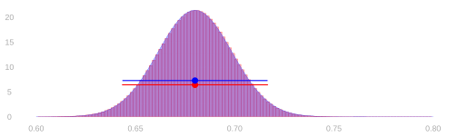
- Let’s compare our two approaches to calibration in our turnout poll.
\[ \begin{aligned} \textcolor{red}{\text{binomial interval}} &= 0.6800 \pm 0.0368 \\ \textcolor{blue}{\text{normal interval}} &= 0.6800 \pm 0.0366 \end{aligned} \]
- We have to go out to 4 digits, way beyond what’s statistically meaningful, to see any difference in these intervals.
- Our interval estimate—either one—is telling you might be off by a few hundredths.
- Who cares about another couple ten-thousandths at the edge of the interval?
Thinking Speculatively About Intervals

- Suppose we’re not satisfied with this level of precision, so we’re going to collect more data.
- Suppose we want our interval to be \(\pm .01\) instead of \(\pm 0.037\).
- How many people, in total, do we need to call? We can use the normal approximation to figure that out.
\[ \hat \theta \pm 1.96\sigma \qfor \sigma = \sqrt{\frac{\theta (1-\theta)}{n}} \qqtext{ is } \hat\theta \pm .01 \qqtext{if} 1.96\sqrt{\frac{\theta (1-\theta)}{n}} = .01 \]
- Now all we have to do is solve for \(n\). And, since we don’t know \(\theta\), use our best guess, \(\hat\theta=0.68\).
\[ n = \frac{1.96^2 \ \hat\theta (1-\hat\theta)}{.01^2} \approx 8000 \]
The Easy Version
- There’s a trick to this. Let’s compare the interval width we have to the one we want.
\[ \begin{aligned} \pm 0.037 &= \pm 1.96\sqrt{\frac{\hat\theta (1-\hat\theta)}{625}} \\ \pm 0.01 &= \pm 1.96\sqrt{\frac{\hat\theta (1-\hat\theta)}{n}} \end{aligned} \]
- All that changes in this formula is the same size. And the sample size ratio falls out of the interval width ratio.
\[ \frac{0.037}{.01} = \frac{1.96\sqrt{\frac{\hat\theta (1-\hat\theta)}{625}}}{1.96\sqrt{\frac{\hat\theta (1-\hat\theta)}{n}}} = \sqrt{\frac{n}{625}} \qqtext{ so } n = 625\left(\frac{0.037}{.01}\right)^2 \approx 8000 \]
- To get the new sample size, multiply …
- the sample size we have
- the square of the desired ratio of the interval widths.
- To double precision, quadruple the sample size. To triple it, increase it 9x.
- To get another digit, i.e. increase precision 10x, increase the sample size 100x.
Starting from Scratch
What do we do if we don’t have any data yet?
- Then we don’t have a ‘current interval width’ to compare to the ‘desired interval width’.
- And we don’t have a sample proportion \(\hat\theta\) to plug in for the population proportion \(\theta\).
But we can still use the formula we worked out earlier to get somewhere. \[ n = \frac{1.96^2 \ \theta (1-\theta)}{.01^2} \]
We don’t have an estimate of \(\theta\), but we do know it’s between 0 and 1. And, consequently, so is \(\theta(1-\theta)\).
So we know that if we just substitute \(1\) into our formula, we’ll get a number that’s bigger than we need.
\[ n < n' = \frac{1.96^2 \cdot 1}{.01^2} \approx 38400 \]
That’s a bit excessive. In fact, we can substitute in \(1/4\) instead of \(1\). \[ n < n' = \frac{1.96^2 \cdot 1/4}{.01^2} \approx 9600 \]
Much better. That’s pretty close to the number we got with preliminary data.
Why Can We Use 1/4?
Here’s the claim. Why is it true? \[ n := \frac{1.96^2 \ \theta (1-\theta)}{.01^2} < n' := \frac{1.96^2 \ \times 1/4}{.01^2} \]
Hint. Look at the graph of \(f(x) = x(1-x)\) above.
- Because \(1/4\) is the biggest \(\theta (1-\theta)\) gets for \(\theta \in [0,1]\).
- And it happens, for what it’s worth, when \(\theta = 1/2\).
- That is, we’ll have the least precision — at a given sample size — when the proportion we’re estimating is 1/2.
Appendix
Nothing here will show up on an exam.
Squaring Sums
\[ \qty{\sum_{i=1}^n Z_i^2} = \sum_{i=1}^n \sum_{j=1}^n Z_i Z_j \]
- This is a generalization of the identity \((a+b)^2 = a^2 + 2ab + b^2\) to more terms.
- You may be so used to that you don’t even think about what’s really happening.
- Here’s a version where I’m very explicit: it’s a product of two copies of \((a+b)\): one pink and one teal.
\[ (a+b)^2 = \textcolor[RGB]{239,71,111}{(a+b)}\textcolor[RGB]{17,138,178}{(a+b)} = \textcolor[RGB]{239,71,111}{a}\textcolor[RGB]{17,138,178}{a} + \textcolor[RGB]{239,71,111}{a}\textcolor[RGB]{17,138,178}{b} + \textcolor[RGB]{239,71,111}{b}\textcolor[RGB]{17,138,178}{a} + \textcolor[RGB]{239,71,111}{b}\textcolor[RGB]{17,138,178}{b} = a^2 + 2ab + b^2 \]
- How do we generalize this to more terms? We’ll use the same color-coded-copies trick.
- It helps to count out the terms in our pink copy using \(i\) and in our teal copy using \(j\).3
- When we multiply out our sums, we get a product term for each pair of terms in the sum.
- Each product term involves one term in the pink sum and one term in the teal one.
\[ \qty{\sum_{i=1}^n Z_i}^2 = \textcolor[RGB]{239,71,111}{\sum_{i=1}^n Z_i} \textcolor[RGB]{17,138,178}{\sum_{j=1}^n Z_j} = \textcolor[RGB]{239,71,111}{\sum_{i=1}^n} \textcolor[RGB]{17,138,178}{\sum_{j=1}^n} \textcolor[RGB]{239,71,111}{Z_i} \textcolor[RGB]{17,138,178}{Z_j} \]
Why Continuous Distribution is a Blessing
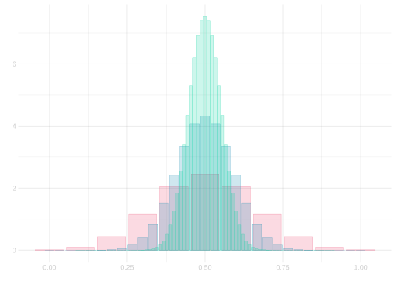
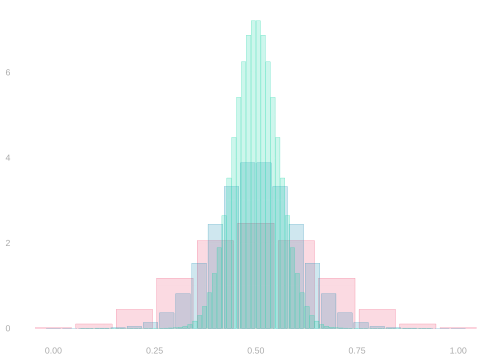
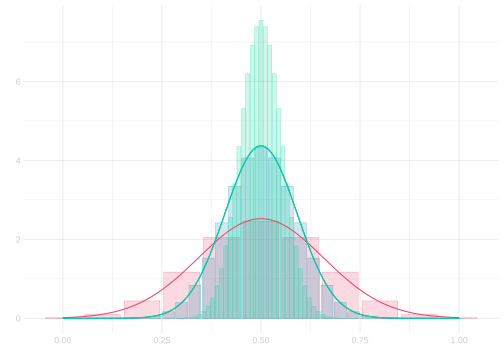
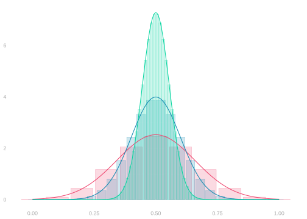
- Think about what happens when you tried to compare binomial distributions for different sample sizes \(n\).
- If you’re lucky, and your sample sizess are all multiples of each other, then the probability shown in one wide bar
gets split up into several narrow bars when sample size increases.- E.g., how the probability in the bar \(\color[RGB]{239,71,111}5/10\)] gets split into \(\color[RGB]{17,138,178}14/30\), \(\color[RGB]{17,138,178}15/30\), and \(\color[RGB]{17,138,178}16/30\) …
- … and then into \(\color[RGB]{6,214,160}42/90 \ldots 48/90\) as sample size goes from \(\color[RGB]{239,71,111}10\) to \(\color[RGB]{17,138,178}30\) to \(\color[RGB]{6,214,160}90\).
- That’s what’s going on in the plot on the left. What we see on the right is worse.
- If your sample sizes aren’t multiples, we don’t just split up one wide bar’s probability into several narrow ones.
- For the narrow bars we see straddling two wide bars, we have to ‘merge’ probability from two wide bars.
- It’s a mess. And using bars hides the worst of it.
- Most of the points that have mass for one \(n\) will have none for the others.
- It’s not possible to have a sample mean of \(5/10\) with a sample size of \(25\). It’s the wrong denominator.
- Probability mass at \(\hat\theta = 1/2\) can go from maximal for \(n=10\) to zero for \(n=25\) …
- … even if the population mean is the same: always \(\theta=1/2\). That happens in the right plot.
- Using an approximation with zero mass at any particular point, like the normal distribution, lets us avoid all this.
- We do have to integrate whenever we want to calculate a probability.
- But we can easily compare the probabilities of the same interval at different sample sizes.
- In a sense, all the ‘splitting’ and ‘merging’ is built into the approximation.
See Section 14.2 if you’re curious about what I mean by that.↩︎
See Section 14.1 if this is unfamiliar.↩︎
If we used \(i\) to count terms in both sums, we’d wind up with two different things we call \(i\): one pink and one teal. We could get by saying ‘pink \(i\)’ and ‘teal \(i\)’ in class, but people you meet later on would probably get confused if you talk this way. Using \(i\) and \(j\) is conventional.↩︎